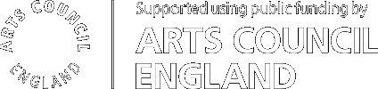

Out, damned spot! out, I say!—One: two: why, then, ’tis time to do’t.
EPIC HAND WASHING IN A TIME OF LOST NARRATIVES
is an iteration on the project
A Kitchen of One's Own,
created for the
media wall
in the Photographers’ Gallery, London. This iteration of the project displays a set of
68 videos
from the
Epic Kitchens dataset
that were trained for machine learning with the verb “wash” and the paired noun “hand.” This speculative remix juxtaposes
a dataset of texts
curated by the authors—selections of quotes from literature written during or about pandemics such as the bubonic plague and the global influenza pandemic of 1918-19.
Fill out this form
if you would like to suggest a quote. This project was made by
xtine burrough
and
Sabrina Starnaman
with technical direction provided by
Dale MacDonald.
It was developed for
Unthinking Photography,
a resource from The Photographers’ Gallery that explores photography’s increasingly automated, networked life.
The source code is CC v1.0 Universal,
available on GitHub.
